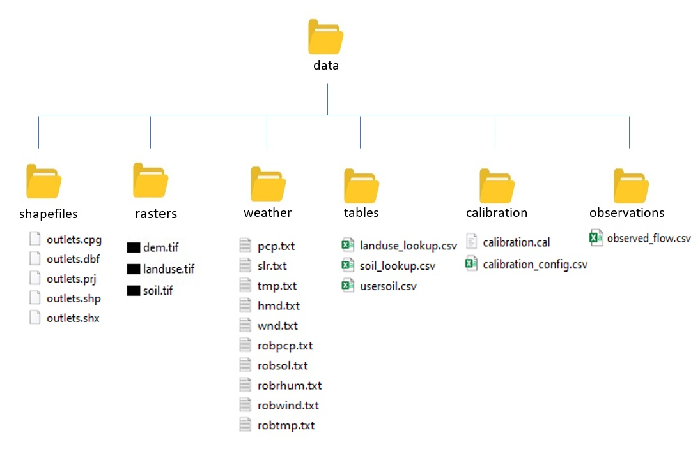

The data requirements for the SWAT+ AW are the same as data requirements for QSWAT+
and SWAT+ Editor. Thus, users can use the same data formats as the GUI counterparts.
For more information on SWAT+ data formats refer to QSWAT guide (Dile, Srinivasan, &
George, 2017).

Figure 1: Directory structure of data prepared for the
SWAT+ AW
Rasters files. i.e. Digital elevation model (DEM), land use map and soil map should
be placed in the rasters directory within the Data folder.
All shapefiles. i.e. outlet shapefile and river shapefile for ‘burn in’ should be
placed in shapes directory.
Files that have information that needs to be imported into project databases later
should be placed in the tables directory. These files include land use and
soil lookup tables, and soil properties table.
All weather files should be placed in the weather directory.
If you want to include calibrated parameters that should be applied to the model
after set up, you should include the parameters file in the calibration
directory.
Remember to include the name of the calibration file in the config.